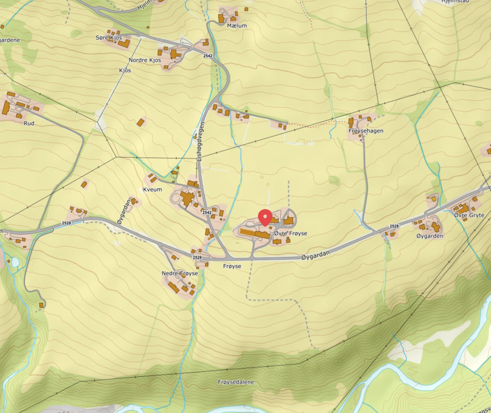

| Felt | Opplysning |
|---|---|
| Normalform for bostedsledd | Frøyse øvre |
| Andre sentrale navn | Øvre Frøyse; Frøisen øvre; Frøysen øvre |
| Stedstype | Gård; historisk bostedstilknytning med forbehold |
| Geografisk ramme | Gausdal (Innlandet), Norge; sannsynlig moderne referanse1 kilde · vurderingK-0019; SSR-objekt 51701 er ikke sikkert identifisert med det historiske bostedet. |
| Historisk matrikkel | 74/1 → 192/1 pr. 01.01.19621 kilde · vurderingK-0021; ikke en kontroll av dagens areal eller alle underbruk. |
| Historisk jurisdiksjon | Oppgitt Gausdal sogn, Østre Gausdal herred, Kristians amt1 kilde · vurderingTidligere oppgitt i issue #1; ikke selvstendig kontrollert. K-0001 |
| Fradelt bruk | Nigard1 kilde · vurderingK-0024; 74/23–192/23 er fraskilt hovedbølet 74/1–192/1. |
Historie
| Dato | Hendelse | Opplysning |
|---|---|---|
| før 1350 | Gårdshistorie ifølge bygdeboka | Eldre Frøyse skal ha vært delt i to.1 kilde · vurderingRegistrert: Eldre Frøyse skal ha vært delt i to. Registrert med forbehold 04.11.2026 etter F-0025: Garder og slekter i Engjomskretsen (oppgitt utgivelsesår 2016), side 182, «Frøyse, øvre 192.1», er knyttet som supplerende gårdsomtale til dette stedsnotatet. 192.1 sammenholdes nå med gnr. 192 bnr. 1, etter det registrerte grunnboksbelegget i F-0026. Grunnboksbladet dokumenterer forbindelsen til eldre gnr. 74 bnr. 1; se nedenfor. Dette fastslår ikke sikker historisk likestilling med «Frøsen /øvre», SSR-objektet eller Frøsenvolden/Frøisevolden. Gårdshistorisk bakgrunn Registrert: Ifølge boka ble eldre Frøyse delt i flere gårder. Ole Jensen Frøyse, kalt Stor-Frøysen, skal ha samlet Oppistuen, Nistuen, Systuen og Skurstad først på 1800-tallet og lagt grunnlaget for det boka kaller dagens Øvre Frøyse. Bokas antakelse om Nistuen som dagens gård og om eldre slektskap beholdes som usikker.Vurdering og kildebeleggK-0020, side 182, beskriver deling før 1350 og fire gårder på 1600-/1700-tallet: Oppistuen, Nistuen, Systuen og Nordistuen. Dette er en annen opplisting enn gårdene som senere skal ha blitt samlet; Nordistuen erstattes ikke med Skurstad. Boka skriver at Øvre Frøyse «ser ut til» å ha vært én gård til først på 1600-tallet, og spekulerer i to brødre ved delingen i Oppistuen og Nistuen. Dette er ikke etablert slektskap. Formuleringen om tidligere Nistuen som dagens Øvre Frøyse er også usikker. Dette er bygdebokas sekundære framstilling; middelalderbrev, kjøp og personidentiteter er ikke undersøkt separat. «Dagens» viser til boka. Ole Jensen Frøyse er ikke koblet til Ole Amundsen eller noen annen Levn-person. Ingen nye personnavn, bosteder eller relasjoner utledes. Vurdering og kildebeleggK-0020, side 182: Fotoår og steder følger bildeteksten, uten kontroll av fotoarkiv eller egen identifikasjon av bygningene. Boka skriver at nesten hele gården gikk med under krigshandlingene i 1940, og at bare to stabbur stod igjen. Husene «skal ha vært» nybygd og restaurert i årene før krigen. Henvisningen «GM 2 og 8» er ikke undersøkt. Oppgitte bygningsår: våningshus 1945, føderåd 1942, drengestue 1940, stabbur 1914, stall 1943 og driftsbygning 1941. Dette er bokas opplysninger, ikke selvstendig kontrollerte bygningstiltak eller dokumentasjon av personers bosted. Boksidekopien forblir privat. |
| 1874 | Bostedsbelegg | Ole har registerbosted «Frøsen /øvre»; Syvers og Marthes tilknytninger er antatte.2 kilder · vurderingRegistrert: Ole har registerbosted «Frøsen /øvre»; Syvers og Marthes tilknytninger er antatte. Brukerens valgte normaliserte form i issue #1. Normaliseringen for Ole, Syver og Marthe er faglig godkjent i F-0001, med forbehold. Den valgte formen beholdes; SSR oppgir «Øvre Frøyse», se nedenfor. Dette er ikke egen bildelesning. Registerets bostedsform for Ole Amundsen er nøyaktig «Frøsen /øvre», se K-0001. Stedet gir en foreløpig bostedstilknytning for Syver via faren. Registrert med forbehold etter F-0001: antatt fødested for Syver på gårdsnivå og antatt bosted for Marthe. Dette er ikke direkte oppgitte steder for dem i registeret. Nivå: bostedsangivelse, antatt gårdstilknytning; eksakt bruk, husmannsplass eller bygning er ikke fastslått. Disse skal ikke slås sammen. Tidligere oppgitt referanse i issue: «Frøisen øvre», gnr. 74, Gausdal sogn, Østre Gausdal herred, Kristians amt. Forbindelsen mellom eldre gnr. 74 bnr. 1 og gnr. 192 bnr. 1 er nå registrert med grunnboksbelegg nedenfor. Den tidligere oppgitte historiske jurisdiksjonen er fortsatt ikke selvstendig kontrollert. En sannsynlig moderne SSR-referanse med registerpunkt er registrert nedenfor; historisk stedsidentitet er fortsatt foreløpig. Konkret oppgave: kontroller håndskriften og navneidentiteten mot en dokumentert lokal navneform/Rygh, eventuelt SSR med sikker identitet. Bevar registerformen uansett resultat. Samlet forslag.08.11.2026: Syvers konkrete sannsynlige fødested er vurdert til husmannsplassen Frøysevolden nedre. Denne gårdstilknytningen skal ikke leses som fødsel på selve hovedgården; fars kildeform og tidligere belegg beholdes. |
| 1914 | Bygdebokas opplysning | Stabbur oppgitt fra 1914. |
| 1940 | Bygdebokas opplysning | Nesten hele gården brant; to stabbur stod igjen. Drengestue oppgitt fra 1940. |
| 1941 | Bygdebokas opplysning | Driftsbygning oppgitt fra 1941. |
| 1942 | Bygdebokas opplysning | Føderådsbygning oppgitt fra 1942. |
| 1943 | Bygdebokas opplysning | Stall oppgitt fra 1943. |
| 1945 | Bygdebokas opplysning | Våningshus oppgitt fra 1945. |
| 1949 | Fradelt bruk | Nigard 74/23–192/23; boka oppgir kjøp/navneskifte 1948, grunnboka skylddeling 1949.2 kilder · vurderingRegistrert: Nigard 74/23–192/23; boka oppgir kjøp/navneskifte 1948, grunnboka skylddeling 1949. Registrert 04.11.2026 etter F-0028, punkt 2: Frøsenvolden nedre, senere Nigard S-0002, 74/23–192/23, er knyttet som fradelt bruk fra dette hovedbølet, 74/1 senere 192/1. K-0024, PDF-side 3, har «Fraskilt gnr. 74 bnr. 1.» med senere 192 påført. Bokas omtale av tidligere husmannsplass og kjøp/navneskifte 1948 og grunnbokas skylddelingsinnførsel 1949 er samlet med vurdering i S-0002. Årstallene beholdes separat; hovedbøl, plass og fradelt bruk holdes adskilt. Ingen ventende forslag for stedsnotatet. |
| 1952 | Bygdebokas opplysning | Flyfoto med Skurstadhagen og Sjurhagen i bakgrunnen. |
| 01.01.1962 | Matrikkelnummer gjelder fra | Grunnboksbladet forbinder 74/1 og 192/1.3 kilder · vurderingRegistrert: Grunnboksbladet forbinder 74/1 og 192/1. Registrert 04.11.2026 etter F-0026: Grunnboksbladet forbinder eldre gnr. 74 bnr. 1 med gnr. 192 bnr. 1, med påføring om nytt nummer pr. 01.01.1962. Dette dokumenterer nummerforbindelsen ved sammenhold av Ryghs 74 og bygdebokas 192.1. Kommunesammenslåing som årsak er fortsatt brukerens teori.Vurdering og kildebeleggK-0021, PDF-side 3, bilde-ID tl20091122070811, har eldre «G.Nr. 74 bnr. 1.» med overstrøket 74, nytt 192 og navnefelt «Frøisen øvre med Skulstad: Frøisen øvre.». PDF-side 6, tl20091122070814, har påføringen «Pr. 1/1-1962 gnr. 192». PDF-side 7, tl20091122070815, har «GNr. 192 bnr. 1» og «Frøysen øvre» på Blad III. Datoen viser når det nye nummeret gjelder fra etter påføringen, ikke når teksten fysisk ble skrevet. Dette gir et direkte kildebelegg for nummerforbindelsen for bnr. 1, og støtter sammenholdet med Rygh og bygdeboka. Det er ikke en generell omnummereringstabell eller belegg for uendret areal. Ryghs geografiske kapittel/trykkside og den tidligere oppgitte historiske jurisdiksjonen er fortsatt ikke kontrollert selvstendig. Brukeren opplyser at Østre og Vestre Gausdal ble slått sammen 01.01.1962 etter deling i 1879. Kommunedatoene er ikke kontrollert mot en egen administrasjonshistorisk kilde her. Grunnboksbladet oppgir ikke årsaken til omnummereringen. Teorien om kommunesammenslåingen beholdes med denne avgrensningen, uten ny avtalt forskningsoppgave. Nummerforbindelsen avgjør ikke den historiske personlokaliseringen ved «Frøsen /øvre», bestemte husmannsplasser/bygninger, Frøsenvolden/Frøisevolden eller SSR-identitet. Tidligere godkjente personkoblinger og forbehold beholdes. |
Udaterte og ikke nøyaktig tidfestede opplysninger
| Dato | Hendelse | Opplysning |
|---|---|---|
| Først på 1800-tallet | Samling av gårder ifølge bygdeboka | Ole Jensen Frøyse skal ha samlet Oppistuen, Nistuen, Systuen og Skurstad.1 kilde · vurderingRegistrert: Ole Jensen Frøyse skal ha samlet Oppistuen, Nistuen, Systuen og Skurstad. K-0020, side 182; bokas sekundære framstilling. Det er ikke valgt en eksakt sorteringsdato. Bokas antakelse om Nistuen som dagens gård og eldre slektskap forblir usikker; Ole Jensen er ikke koblet til noen Levn-person. |
| Udatert | Navnebelegg hos Rygh | Frøisen øvre og nedre, nr. 74 og 75.1 kilde · vurderingRegistrert: Frøisen øvre og nedre, nr. 74 og 75. Registrert med forbehold 2026-11-01 etter F-0018: Levert digitaltekst av O. Ryghs Norske Gaardnavne, bind 4, side 192, har «74. 75. Frøisen øvre og nedre.», se K-0018. Tekstoppslaget er kontrollert. Trykt side, geografisk kapittelkontekst, separat nummerfordeling er ikke kontrollert i Rygh-materialet. Grunnboksbelegget nedenfor dokumenterer nå eldre gnr. 74 bnr. 1 for øvre gård og forbindelsen til 192 bnr. 1. Moderne SSR-belegg er registrert separat nedenfor. Dette bekrefter ikke sikkert likestilling med «Frøsen /øvre» i K-0001 eller personenes bosted. Brukerens valgte Frøyse øvre og tidligere godkjente tilknytninger beholdes med sine forbehold. Se også SSR-belegget nedenfor. |
| Udatert | Moderne SSR-referanse | Øvre Frøyse; foreløpig kobling til det historiske stedet.1 kilde · vurderingRegistrert: Øvre Frøyse; foreløpig kobling til det historiske stedet. Registrert med forbehold 2026-11-01 etter F-0019, med registeravskrift i K-0019: Kartverkets leverte faktaark oppgir «Øvre Frøyse», Gard, Gausdal (Innlandet), stadnummer 51701, stadnamnnummer 51701-1 og skrivemåtenummer 1. Skrivemåtestatus er «Godkjent og prioritert», datert 1991-07-01; navnesaksstatus er samtidig «Ubehandla». SSR-objekt 51701 er en sannsynlig moderne referanse til dette stedsnotatet, basert på navneleddene og Gausdal. Koblingen til det historiske stedet er foreløpig: faktaarket har ikke gårdsnummer 74 eller de historiske navneformene. Faktaarkets koordinatpar 10.15945, 61.28453 er registerpunktet for SSR-objektet, ikke dokumentert bosted/fødested for personer eller plassering av en historisk bygning. Det beviser ikke sammenfall med Frøsenvolden eller Frøisevolden. Gård, bruk og plass holdes adskilt. Brukerens valgte Frøyse øvre og tidligere godkjente tilknytninger beholdes med sine forbehold. |
Navn
| Navneform | Belegg | Type |
|---|---|---|
| Frøyse øvre | Brukervalg; år ikke angitt | Normalisert, brukervalgt navn2 kilder · vurderingBrukerens valgte normaliserte form i issue #1. Normaliseringen for Ole, Syver og Marthe er faglig godkjent i F-0001, med forbehold. Den valgte formen beholdes; SSR oppgir «Øvre Frøyse», se nedenfor. Dette er ikke egen bildelesning. Registerets bostedsform for Ole Amundsen er nøyaktig «Frøsen /øvre», se K-0001. Stedet gir en foreløpig bostedstilknytning for Syver via faren. Registrert med forbehold etter F-0001: antatt fødested for Syver på gårdsnivå og antatt bosted for Marthe. Dette er ikke direkte oppgitte steder for dem i registeret. Nivå: bostedsangivelse, antatt gårdstilknytning; eksakt bruk, husmannsplass eller bygning er ikke fastslått. Disse skal ikke slås sammen. Tidligere oppgitt referanse i issue: «Frøisen øvre», gnr. 74, Gausdal sogn, Østre Gausdal herred, Kristians amt. Forbindelsen mellom eldre gnr. 74 bnr. 1 og gnr. 192 bnr. 1 er nå registrert med grunnboksbelegg nedenfor. Den tidligere oppgitte historiske jurisdiksjonen er fortsatt ikke selvstendig kontrollert. En sannsynlig moderne SSR-referanse med registerpunkt er registrert nedenfor; historisk stedsidentitet er fortsatt foreløpig. Konkret oppgave: kontroller håndskriften og navneidentiteten mot en dokumentert lokal navneform/Rygh, eventuelt SSR med sikker identitet. Bevar registerformen uansett resultat. Samlet forslag. |
| Frøsen /øvre | 1874 | Registerform1 kilde · vurderingK-0001 |
| Frøisen øvre og nedre | Udatert digitaltekst; Rygh nr. 74–75 | Kildeskrevet navn1 kilde · vurderingK-0018 |
| Øvre Frøyse | 01.07.1991 (skrivemåtestatus i SSR) | Registerform; foreløpig stedskobling1 kilde · vurderingK-0019; navnesak Ubehandla er bevart, ikke et datert historisk personbosted. |
| Frøisen øvre med Skulstad: Frøisen øvre. | Udatert navnehode | Grunnbokas stedsbetegnelse1 kilde · vurderingK-0021 |
| Frøysen øvre | Udatert Blad III | Grunnboksform1 kilde · vurderingK-0021 |
| Frøyse, øvre | 2016 (bygdebokas utgivelsesår) | Bokas stedsnavn; ikke hendelsesdato1 kilde · vurderingK-0020 |
Personer knyttet til stedet
| Person | Tilknytning | Belegg |
|---|---|---|
| Ole Amundsen | Registerbosted1 kilde · vurderingRegistrerte enkeltbelegg; ingen sammenhengende botid eller eierskap utledet. K-0001 | 1874 |
| Syver | Hovedgårdstilknytning; sannsynlig fødeplass under gårdenVis vurderingFrøysevolden nedre er valgt som sannsynlig fødested 08.11.2026 etter samlet vurdering av K-0001, K-0002 og K-0020. Dette er ikke en fødsel på selve hovedgården. Den tidligere antatte tilknytningen via fars Frøsen /øvre beholdes som eldre, grovere kildegrunnlag. Frøysevolden nedre har den konkrete sannsynlighetsvurderingen. | 13.06.1874 (sannsynlig) |
| Marthe | Antatt bosted1 kilde · vurderingGodkjent antakelse, ikke eget registerbosted. K-0001 | 1874 |
Bilder

Kartverket / norgeskart.no. Kartet bruker navneformen «Øvre Frøyse». Opphav og kreditering.
Åpne spørsmål
-
Kan personenes historiske bosted identifiseres sikkert?
Konkret tidligere avtalt kontroll av håndskrift og navneidentitet mot lokal form/Rygh og eventuell SSR står fortsatt ved lag. Registerformen bevares. [K-0001](../Kilder/K-0001.md) [K-0018](../Kilder/K-0018.md) [K-0019](../Kilder/K-0019.md) -
Er kommunesammenslåing årsaken til nummerskiftet?
Dette er fortsatt brukerens teori. Grunnboka dokumenterer nummerforbindelsen, men ikke årsaken; ingen ny forskningsoppgave er avtalt. [K-0021](../Kilder/K-0021.md)